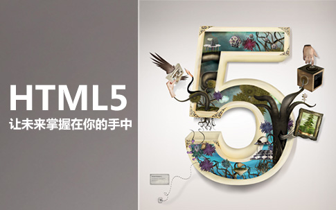

更新时间: 2024年05月03日21时29分 来源:网络空间
♥ 图文平衡性。平衡性是指文字、图像等要素的占用空间分布均匀，而且色彩协调，给人以平稳、舒服的感觉，满足客户的感官感受。任何没有达到平衡性的元素，均会造成视觉上的排斥。
♥ 内容对称性。并非要求设计者将所有内容统一对称，而是建议打破传统对称的方法，避免呆板、死气沉沉的感觉；在适当的时候产生一些变化，会有不一样的效果，对称也是一种美。
♥ 布局疏密度。留白是一种巧妙的技巧，在疏密度中可以体现。疏密度是指整个网页不要只用一种样式，要适当留白，运用空格，改变行距、字距等，从而产生一些变化。要做到疏密有度，即“密不透风，疏可跑马”。
♥ 视觉对比性。对比指的是从不同的色调、色彩、形态等技巧进行表现，从而形成鲜明的视觉效果。如果开发者注重这项网站开发技巧，就能够创造出富有变化的页面效果。
♥ 合理的布局比例。对布局而言，适当的比例非常重要，虽然比例的数值不一定为黄金分割比的数值，但实际的比例务必协调，否则页面就会显得混乱，参差不齐，影响效果。
原文链接：https://baijiahao.baidu.com 文章来源： 百家号